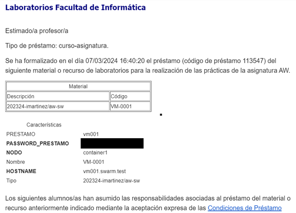
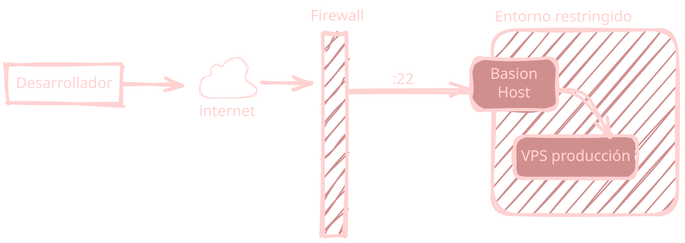
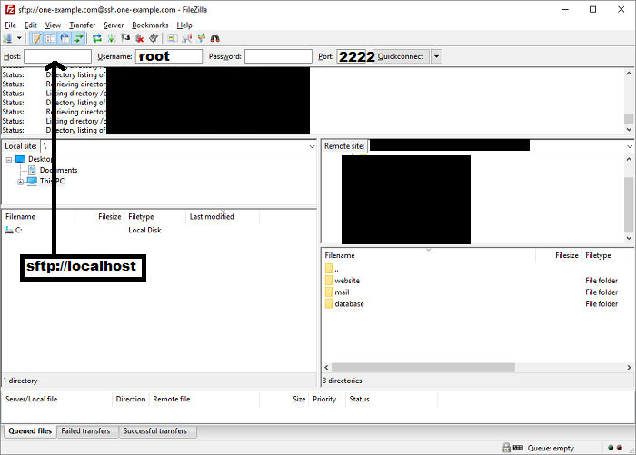
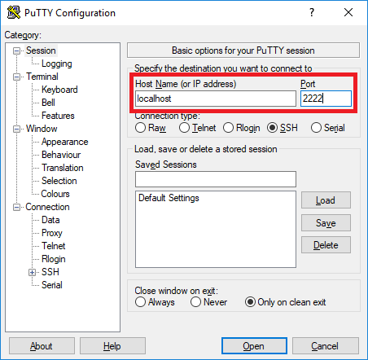

Trabajo con servidores remotos

¿Donde publicamos nuestra aplicación?
Aunque NodeJS en local está my bien para practicar, no es apto para publicar nuestra aplicación.
- Nuestro ordenador no suele ser "visible" desde internet.
- Tiene limitaciones de seguridad
- No siempre tendremos el ordenador encendido
Es preferible publicar las aplicaciones en servidores dedicados
- Alta disponibilidad y siempre conectado
- Habitualmente Linux (y sólo consola)
- IP fija y visible en internet
¿Donde publicamos nuestra aplicación?
Trabajar en remoto es más complicado
- ¿Cómo accedemos al servidor?
- ¿Cómo configuramos el servidor?
- ¿Cómo publicamos la aplicación?
- ¿Cómo creamos la base de datos?
- ¿Cómo podemos consultar los logs?
¿Cómo accedemos al servidor?
- Paneles de control con interfaz gráfica (App Web)
- Opción habitual para la infraestructura de laboratorios
- Acceso directo a la consola (vía SSH)
Acceso vía SSH:
ssh [-p PUERTO] usuario@servidor
- Por defecto, el puerto es el 22
- Una vez conectados, tenemos todos los comandos de consola Linux a nuestra disposición
¿Cómo subimos archivos al servidor?
Lo habitual es subir los archivos mediante algún protocolo usando herramientas
- FTP (poco seguro)
- SFTP (FTP sobre SSH, muy seguro)
¿Cómo configuramos la aplicación?
- Utilizando variables de entorno
- Utilizando uno o varios ficheros de configuración
- Mezclando 1 y 2 de modo que las variables de entorno se leen de un fichero.
¿Cómo creamos la base de datos?
El formato sqlite es compatible entre diferentes plataformas y / o SO.
Podemos subir el fichero desde nuestro equipo al servidor
¿Dónde publicamos nuestra aplicación?
En aplicaciones NodeJS no existe un directorio estándar.
Utilizaremos /home/node que es el directorio del usuario node que utilizaremos para desplegar la aplicación
El entorno de laboratorios soporta un entorno de producción y un entorno beta (para pruebas)
Cada versión de la aplicación será un directorio diferente en /home/node y tendremos que asignarle un puerto diferente
- Producción: 3000
- Beta: 3001
Debugging y búsqueda de errores
La mayoría de errores deberíais de poder encontrando y depurarlo en vuestros equipos.
Un servidor de producción nunca debe "mostrar" sus errores
- Puede dar pistas sobre problemas de seguridad
- Queda muy mal :)
Nuestra aplicación debe tener integrada un logger como pino.
Normalmente tendremos un directorio /home/node/<entorno>/logs
Podremos seguir las actualizaciones del fichero de log con:
tail -f /home/node/<entorno>/logs/XXXX.log
Herramientas recomendadas
Consola Web → Opción recomendada
Conexión SSH
- Windows - BitVise SSH Client
- MacOS / Linux - Soporte nativo en la consola
Cliente SFTP
- Windows - BitVise SSH Client
- MacOS - Cyberduck
- Linux - Soporte nativo del explorador de archivos
sftp://XXXXX
Despliegue con el usuario node
Por defecto tendrás acceso como root
Es una mala práctica desplegar aplicaciones como root
Cambia al usuario node ejecutando en el terminal su node
Cambia al directorio de trabajo habitual /home/node ejecutando en el terminal cd /home/node
Despliegue con el usuario node
Tienes disponible el comando git
- Puedes desplegar tu aplicación haciendo un
git clone - En posteriores ocasiones, puedes actualizarla con
git pull
La política habitual es que la rama main contiene la versión de la aplicación que puede ponerse en producción.
Arranca la aplicación con npm start
Claves SSH para GitHub
Para simplificar el desarrollo y despliegue en un servidor remoto es conveniente configurar una clave SSH para autenticarte en GitHub
Es recomendable generar una clave nueva:
node@vm031$ ssh-keygen
node@vm031$ cat .ssh/id_rsa.pub
Con la clave generada podrás hacer el clone del repositorio sin tener que introducir tu contraseña
Puedes consultar la documentación de GitHub para este tema
¿Cómo dejo la aplicación lanzada aunque cierre la sesión?
Podemos utilizar: tmux, screen. Nosotros usaremos tmux
- Para crear una nueva sesión:
tmux - Lanzamos la aplicación:
npm start - Para salir de la sesión: pulsamos Ctrl+B + "
- Para reconectarnos a una sesión previamente creada:
tmux attach
Consulta esta guía de primeros pasos para ver otras posibilidades que ofrece.
Servidores de laboratorio
En el laboratorio podéis solicitar un servidor dedicado
- Viene con
NodeJSpreinstalado - Accesible desde Internet
- Uno por grupo
Web Facultad >>> Laboratorios FDI >>> Préstamo de material
Procedimiento
Solicitud online
- Un integrante del grupo hace la solicitud
- Debe aportar el correo electrónico del resto de los integrantes
- Los integrantes deben confirmar por correo
Declaración de uso responsable
- Un servidor dedicado y público es una cosa delicada
- El servidor sólo es accesible desde red UCM: cable, wifi y VPN
- Uso exclusivo para el proyecto
¡Muy importante!
Servicio no garantizado (as is)
- Borrado en caso de amenaz ade seguridad o uso indebido
- El servidor no está pensado para desarrollar
- Tenéis que tener copias de seguridad del contenido del mismo
- Si usas git, esto es gratis :D (salvo el fichero de configuración)
Servidores virtuales
Lo que recibís
- URL del panel de acceso (Guacamole)
https://guacamole.containers.fdi.ucm.es - Usuario de guacamole:
vmXXX - URL de acceso web a vuestro servicio
https://vmXXX.containers.fdi.ucm.es
https://vmXXX-beta.containers.fdi.ucm.es - Password de guacamole ¡Cuidadlo bien!
Si te conectas desde casa debes utilizar la VPN de la UCM

Jump-sever / bastion host
En un entorno más realista no tendríamos Guacamole sino que utilizaríamos un jump-server o bastion-host server para conectarnos a la máquina de producción por SSH / SFTP
Jump-sever / bastion host
En este caso tenemos que conectarnos a una máquina intermedia antes de llegar a nuestro destino

Conexión al VPS a través del jump-server
Opción1: Usando el terminal + Filezilla / sftp / putty
- Crear el túnel entre el tu equipo de desarrollo y el VPS
- Línea de comandos
ssh -L 2222:vmxx.swarm.test:22 -N hop@containers.fdi.ucm.es
plink -L 2222:vmxx.swarm.test:22 -N hop@containers.fdi.ucm.es - Password del usuario hop → hop2025
-L 2222:vmxx.swarm.test:22=> crea un túnel entre el puerto 2222 de la máquina donde se ejecuta el comando con el puerto 22 la máquina vmxx.swarm.test- Establecer la conexión por SFTP a través del túnel
- Servidor: localhost, puerto: 2222
- Usuario: root, password: Aparece en el préstamo
Filezilla

Putty
